1.3 修改：在已有形状上加工
有了立体形状，接下来要“加工”它：倒圆角、掏空、打孔、复制、合并、移动……这些命令都在「修改」菜单里（孔、阵列、镜像在「创建」里）。每个命令一张卡：做之前、对话框、做之后。
「修改」菜单#
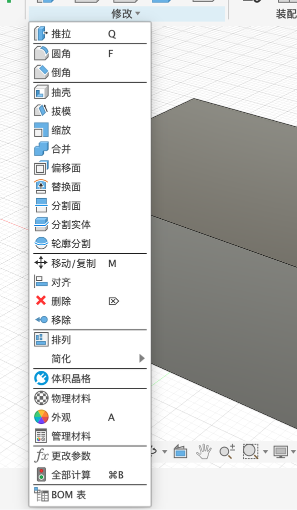
下面每张卡片都从同一个 40 × 30 × 20 的方块开始。
推拉（偏移面）#
一句话：直接拖一个面，让零件长出去或缩回来，不用回去改草图。
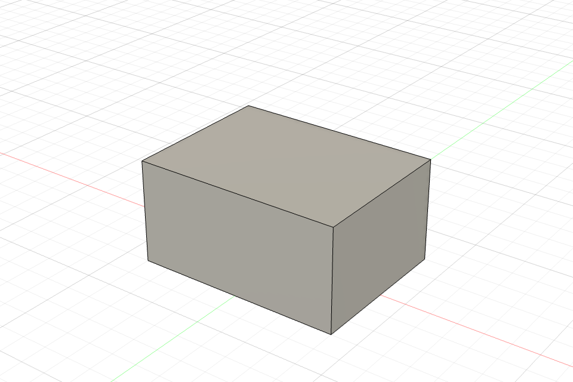
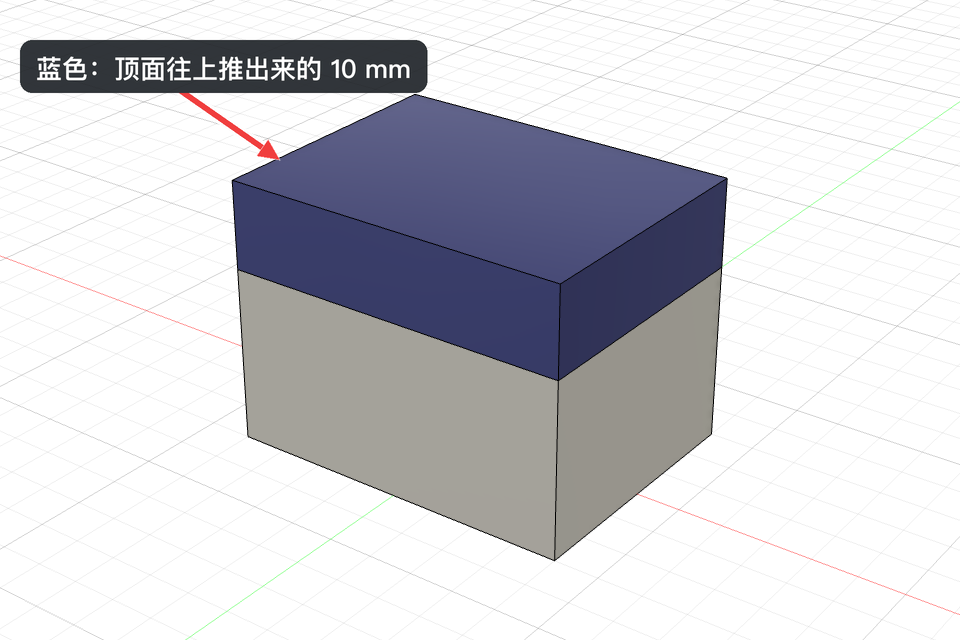
- 选中顶面，「修改 → 推拉」（画布右键圆盘里也有）。
- 输入距离或拖箭头，点「确定」。
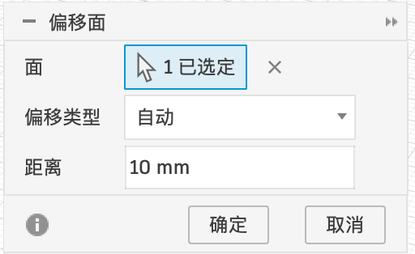
圆角（Fillet）#
一句话：把锋利的边磨圆。

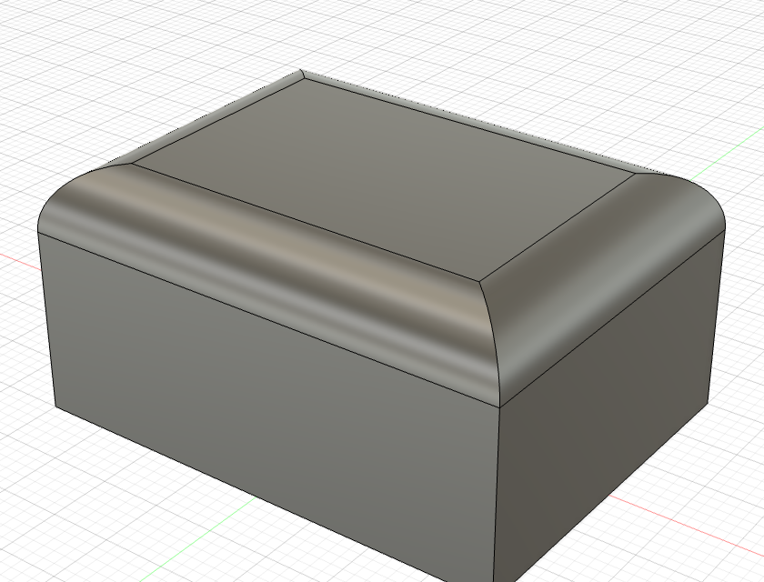
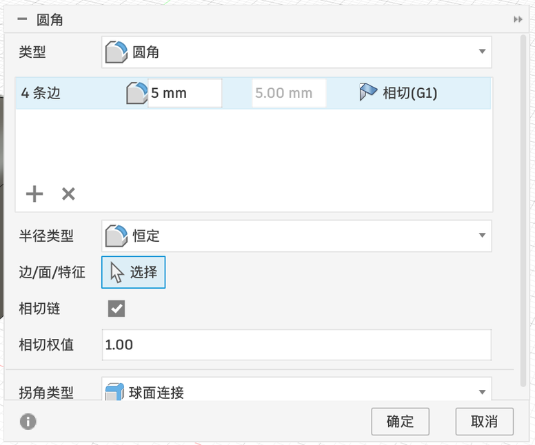
倒角（Chamfer）#
一句话：把边切成一个斜面。
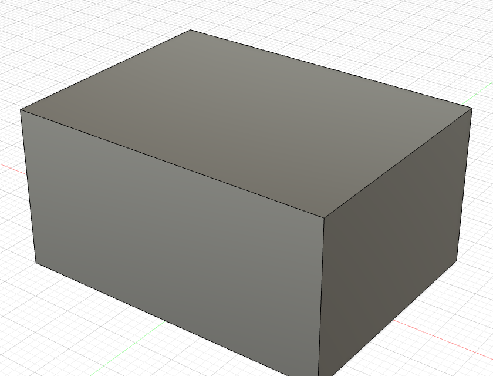
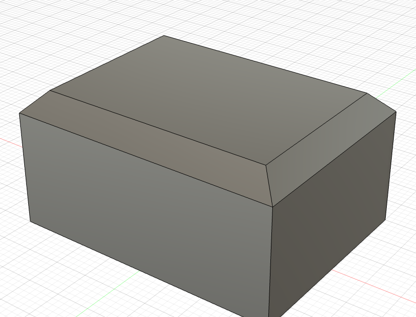
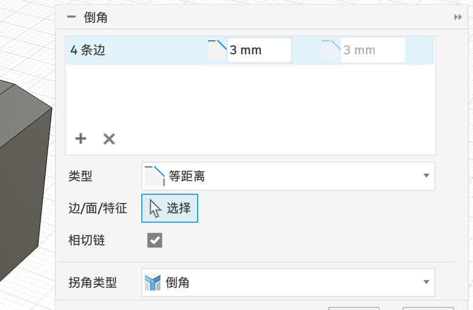
| 选项 | 含义 |
|---|---|
| 边列表 | 选中的边，可以分组设不同大小 |
| 类型 | 等距离（两边切掉一样多）/ 两个距离 / 距离和角度 |
| 相切链 | 自动选上光滑相连的边 |
| 拐角类型 | 几条倒角边交汇处的处理方式 |
抽壳（Shell）#
一句话：把实心的零件掏空，只留一层壁。选中的面会被打开。

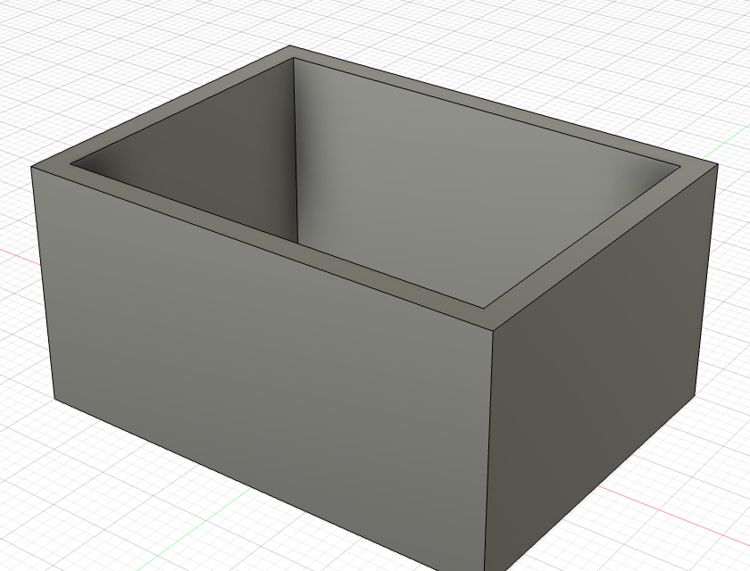
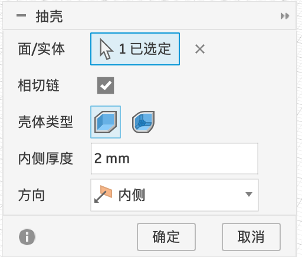
| 选项 | 含义 |
|---|---|
| 面 / 实体 | 选面：这个面被去掉（开口）；选实体：整个掏空成封闭的空心 |
| 相切链 | 选一个面时，把和它光滑相连的面一起去掉 |
| 壳体类型 | 两个图标，两种计算壁的方式，一般保持默认 |
| 内侧厚度 | 壁有多厚 |
| 方向 | 内侧（外形不变，往里长壁）/ 外侧 / 两侧 |
拔模（Draft）#
一句话：让竖直的侧面稍微倾斜一个角度。
为什么要斜：塑料外壳这类注塑件，是在金属模具里成型、再从模具里拔出来的，拔的方向叫开模方向（一般是朝上）。侧面如果完全竖直，拔的时候会一路刮着模具；做成上大下小、稍微斜一点（一般 1°～3°），一拔就松开了，像从纸杯叠里抽出一个纸杯。只做 3D 打印的话用不到这个命令。
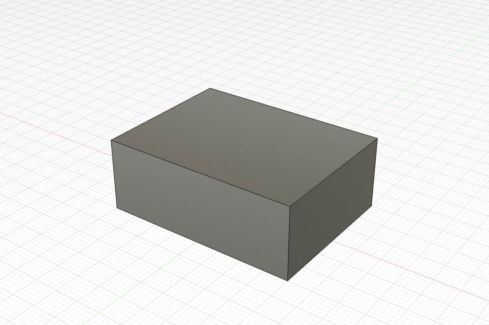
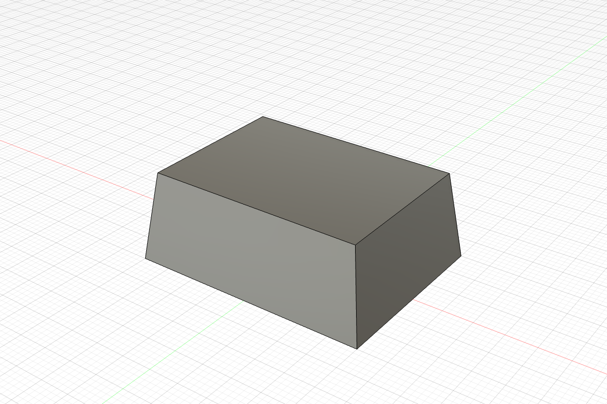
- 「修改 → 拔模」。
- 「开模方向」点一个平面（比如底面或 XY 平面），方向就是垂直于它的方向。画布上会出现一个箭头表示往哪边拔，反了就点「反转开模方向」。
- 「面」选要倾斜的侧面（可以多选），对话框下面会多出「角度」，填好点「确定」。
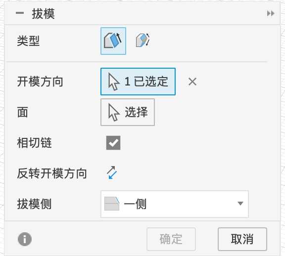
| 选项 | 含义 |
|---|---|
| 类型 | 两个图标：按固定平面拔模（常用）/ 按分模线拔模（侧面从中间一条线往上下两边分别斜） |
| 开模方向 | 零件从模具里拔出来的方向，选一个平面或面 |
| 面 | 要倾斜的面 |
| 相切链 | 勾选后，和选中的面光滑相连的面一起倾斜 |
| 反转开模方向 | 把方向倒过来（侧面往另一边斜） |
| 拔模侧 | 一侧 / 两侧 / 对称：只往一个方向斜，还是两边都斜 |
检查拔模够不够，用「检验 → 拔模分析」（5.10）。
孔（Hole）#
一句话：在面上打一个标准的孔：普通孔、沉头孔、螺纹孔。
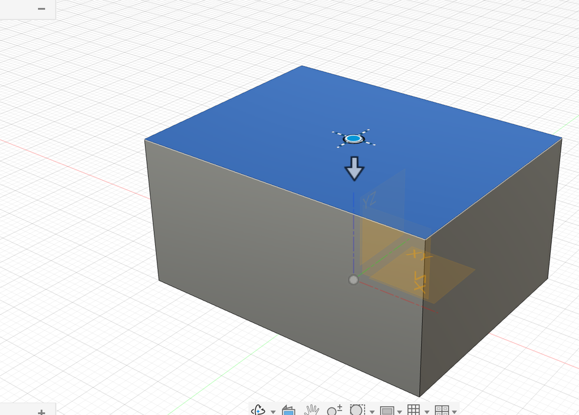
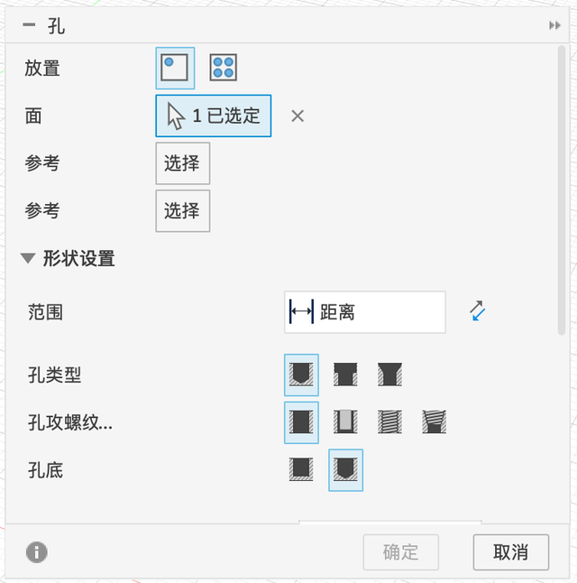
| 选项 | 含义 |
|---|---|
| 放置 | 两个图标：放单个孔 / 在草图里的每个点上各放一个孔 |
| 面 | 孔开在哪个面上 |
| 参考 | 用两条边来给孔定位（离边多远） |
| 范围 | 距离（孔深多少）/ 到（钻到某个面）/ 全部（打穿） |
| 孔类型 | 简单（直上直下）/ 沉头（台阶孔：上面一段粗、下面一段细，配圆柱头内六角螺丝，螺丝头整个埋进去）/ 锥形沉头（喇叭口，配平头（沉头）螺丝，螺丝头和表面齐平） |
| 孔攻螺纹类型 | 简单 / 间隙（按螺丝规格自动给穿孔的尺寸）/ 攻丝（带螺纹）/ 锥形攻丝 |
| 孔底 | 平底 / 尖底（钻头钻出来的 118° 尖角） |
螺纹（Thread）#
一句话：给圆柱面加上螺纹。
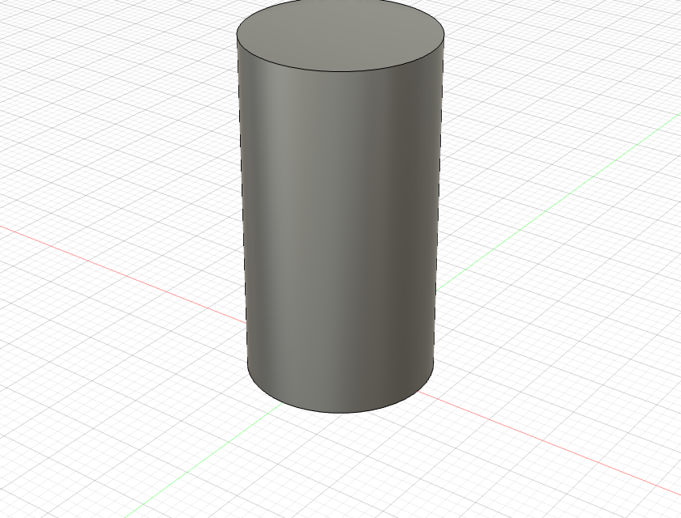
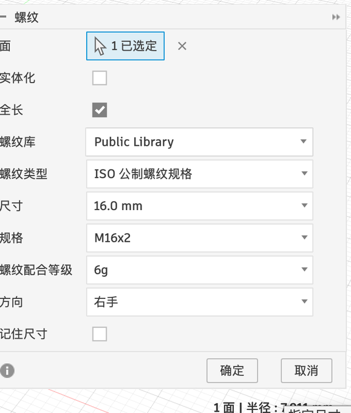
| 选项 | 含义 |
|---|---|
| 面 | 圆柱面（外螺纹）或圆孔内壁（内螺纹） |
| 实体化 | 勾选后真的把螺纹的牙“刻”出来；不勾只是“外观螺纹”（贴图，出图时会标注），文件小、显示快 |
| 记住尺寸 | 下次加螺纹时沿用这次的规格 |
| 螺纹库 / 螺纹类型 | 标准：ISO 公制、英制等 |
| 尺寸 / 规格 / 螺纹配合等级 | 直径、螺距（M16×2 就是直径 16、螺距 2）、配合精度 |
| 方向 | 右旋（常见）/ 左旋 |
阵列和镜像#
在「创建」菜单里。矩形阵列见 P4，环形阵列见 P5，镜像特征见 P2，镜像零部件见 P6。
合并（Combine）#
一句话：把两个实体做布尔运算：粘在一起、挖掉、或只留重叠部分。
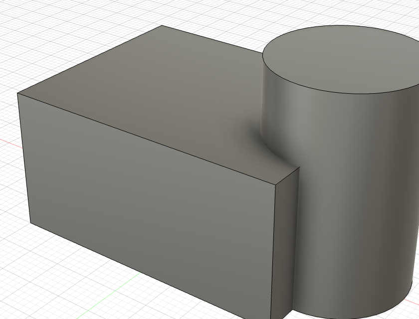
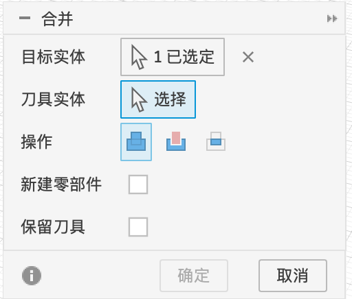
| 选项 | 含义 |
|---|---|
| 目标实体 | 被加工的那个（保留下来的） |
| 刀具实体 | 用来加 / 减的那个 |
| 操作 | 三个图标：合并（粘成一个）/ 剪切（目标减去刀具）/ 相交（只留重叠部分）；结果对比见 1.2 实验 2 |
| 新建零部件 | 结果放进一个新的零部件 |
| 保留刀具 | 剪切后刀具实体不消失（比如用螺丝“挖”出螺丝孔后，螺丝还要留着） |
移动 / 复制（Move）#
一句话：真正地移动或旋转零件（不是转视角）。
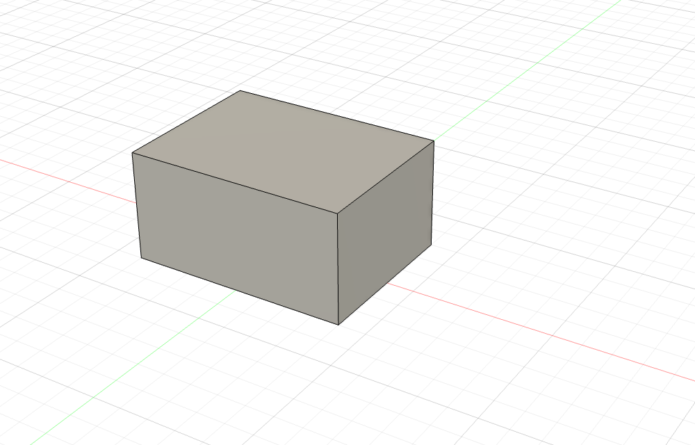
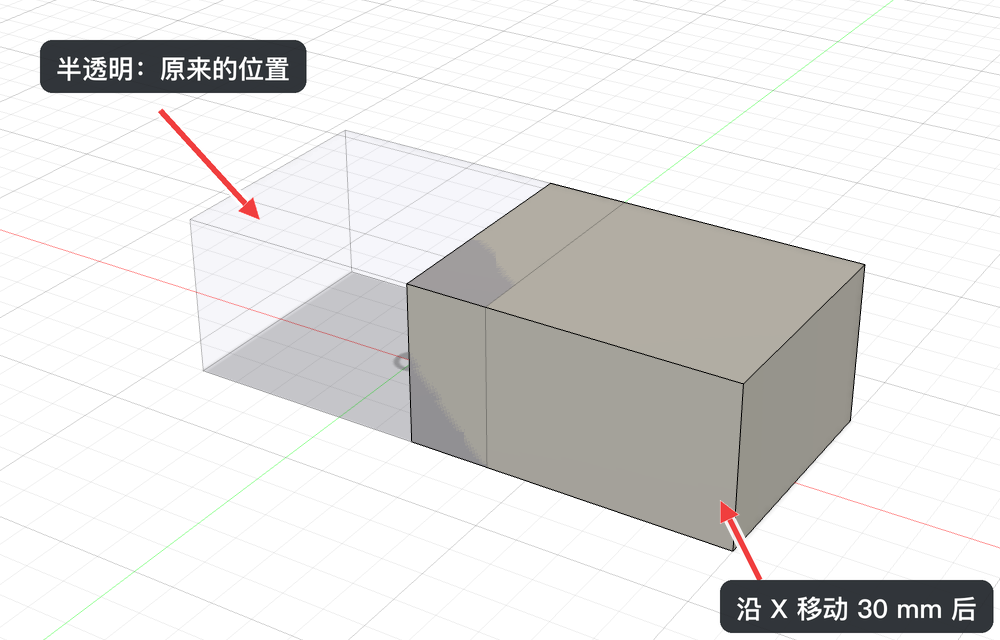
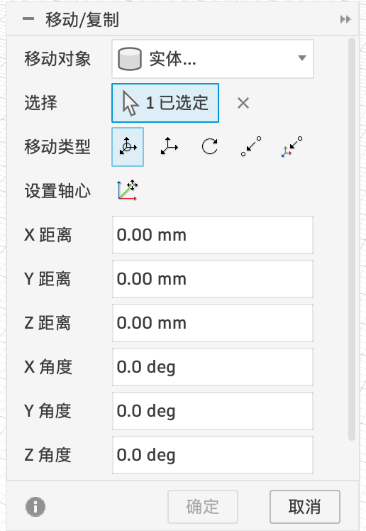
| 选项 | 含义 |
|---|---|
| 移动对象 | 实体 / 零部件 / 面 / 草图对象 |
| 移动类型 | 一排图标：自由移动（拖画布上的三色箭头和圆环）、平移、旋转、点到点等 |
| 设置轴心 | 绕哪个点转 |
| X / Y / Z 距离、X / Y / Z 角度 | 精确输入 |
缩放（Scale）#
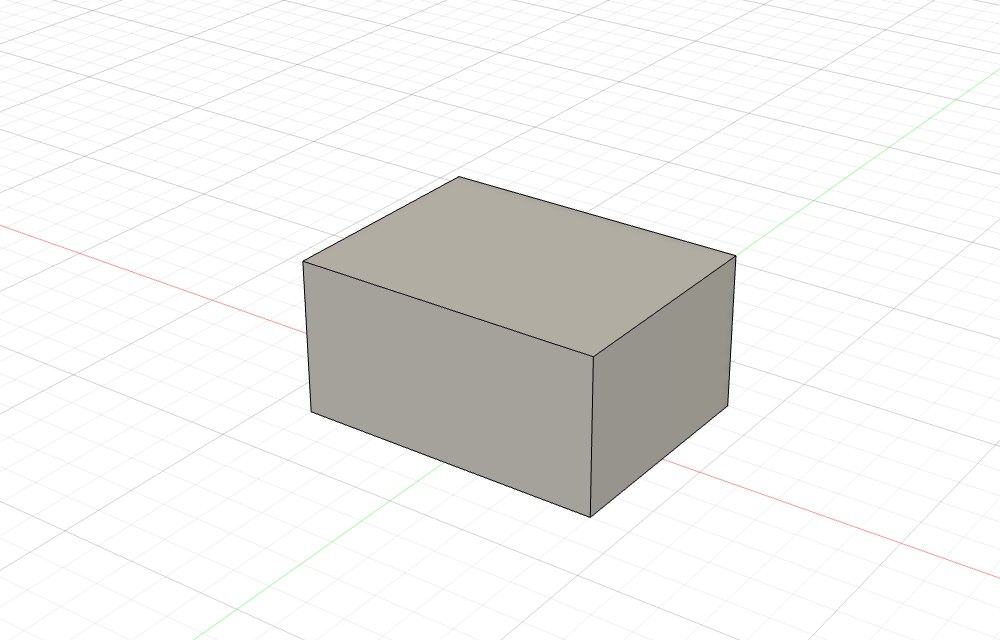
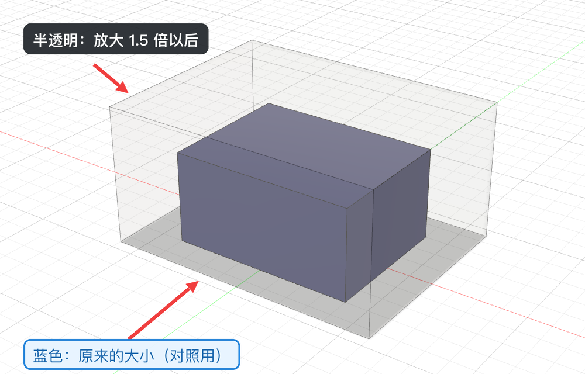
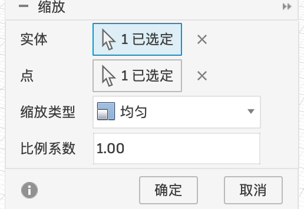
分割实体（Split Body）#
一句话：用一个平面（或面、草图）把一个实体切成两块。
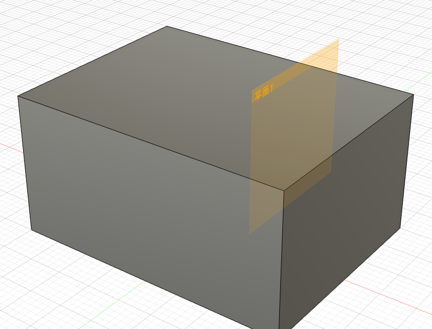
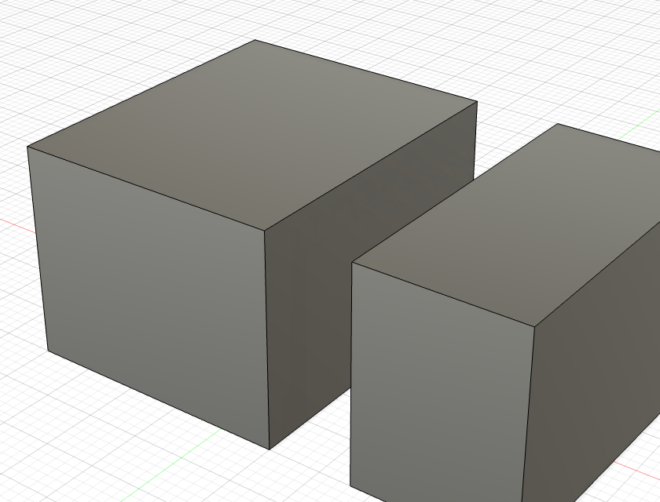
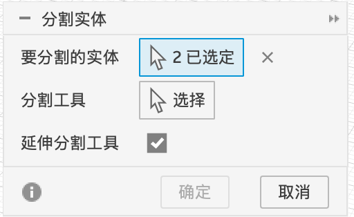
常用于：零件太大打印机放不下，切成两半分别打印。
物理材料#
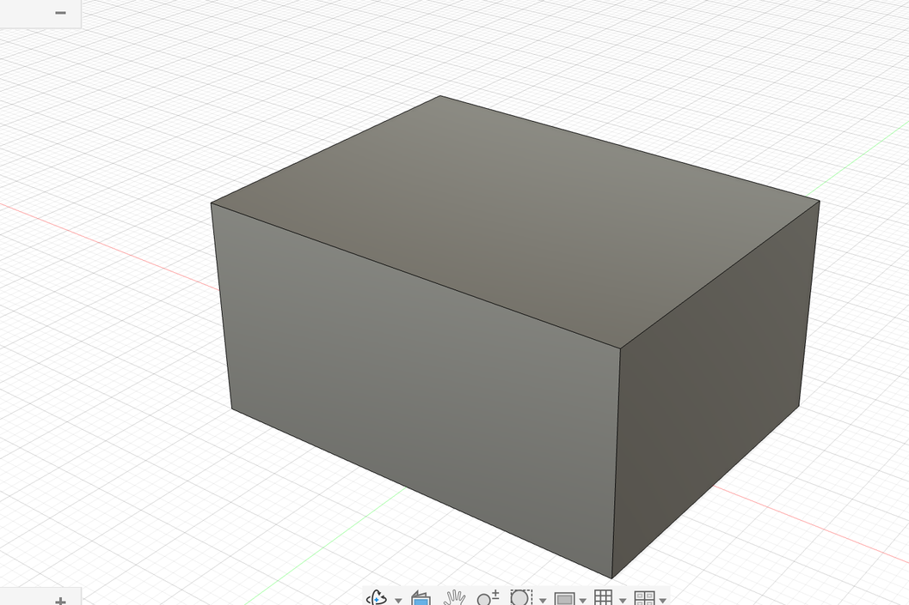
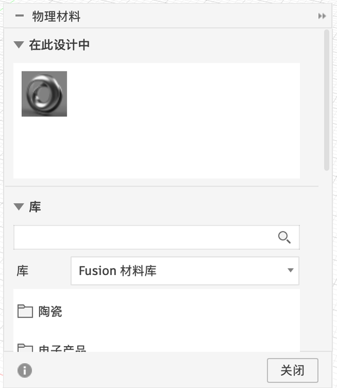
材料决定零件的重量和强度，仿真时用得到。设好后，在浏览器里右键零件 →「特性」能看到质量。和外观的区别见 P7。
菜单里的其他命令#
| 命令 | 干什么 |
|---|---|
| 替换面 | 用另一个面（比如一个曲面）替换掉零件上的一个面 |
| 分割面 | 把一个面切成两块（实体不变），用来单独上色、加载荷 |
| 轮廓分割 | 沿零件的“轮廓线”把实体分开（做模具分型） |
| 对齐 | 把一个对象的面 / 边对齐到另一个 |
| 删除 / 移除 | 删除特征或实体；移除是从当前设计里去掉但保留历史 |
| 简化 | 删掉小孔、小圆角，让模型变简单（给仿真用） |
| 更改参数 | 见 P1 |
| 全部计算 | 让时间轴从头重新计算一遍 |